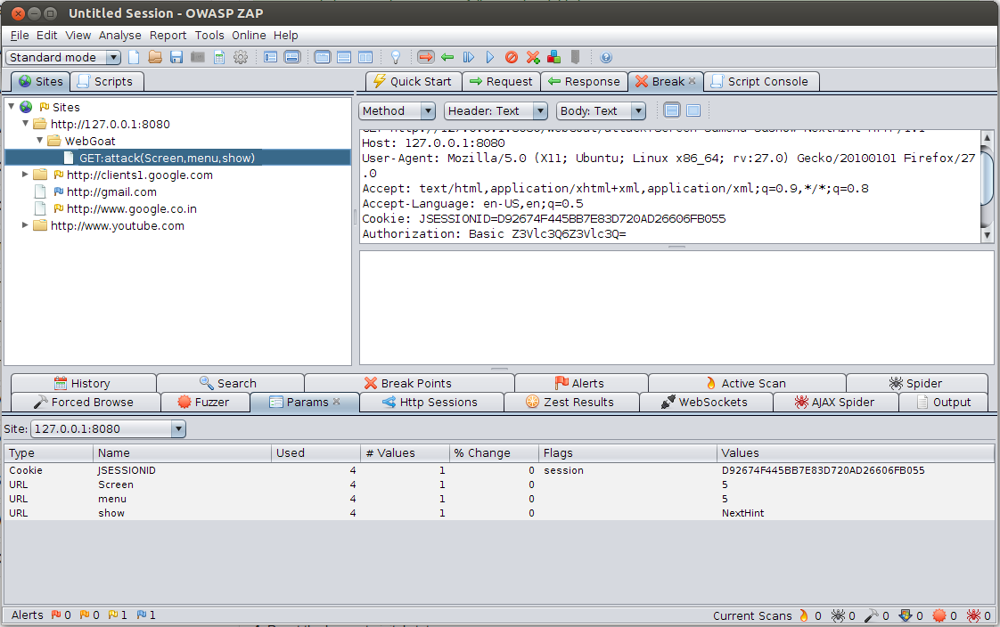
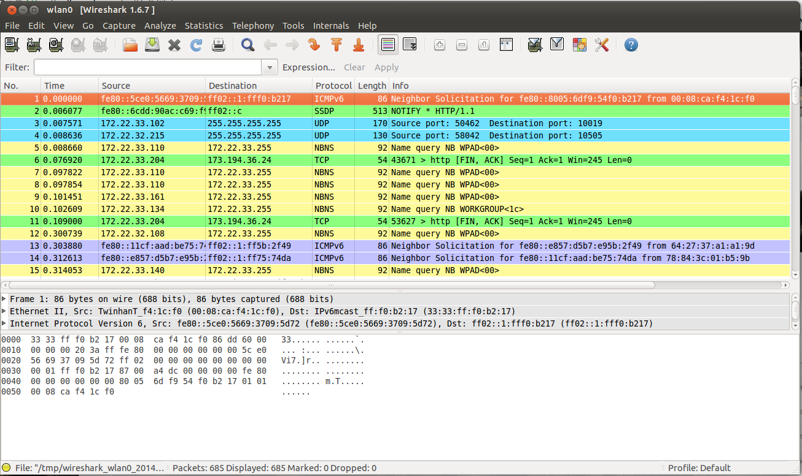

Below is a list of tools which might be useful in solving lessons. You will need a proxy like ZAP to solve most of the lessons.
The Zed Attack Proxy (ZAP) is an easy to use integrated penetration testing tool for finding vulnerabilities in web applications. ZAP provides automated scanners as well as a set of tools that allow you to find security vulnerabilities manually.
ZAP can be download from here. After installing, configure your web browser to use it as a proxy (Instructions).
Firebug is an add-on for the Firefox browser. We can use it to inspect, edit and monitor CSS, HTML and JavaScript.

Wireshark is a network protocol analyzer. You can sniff network traffic and gather useful informations this way.
There are many vulnerability scanners for your own web applications. They can find XSS, Injection Flaws and other vulnerabilities. Below are links to two open source scanner